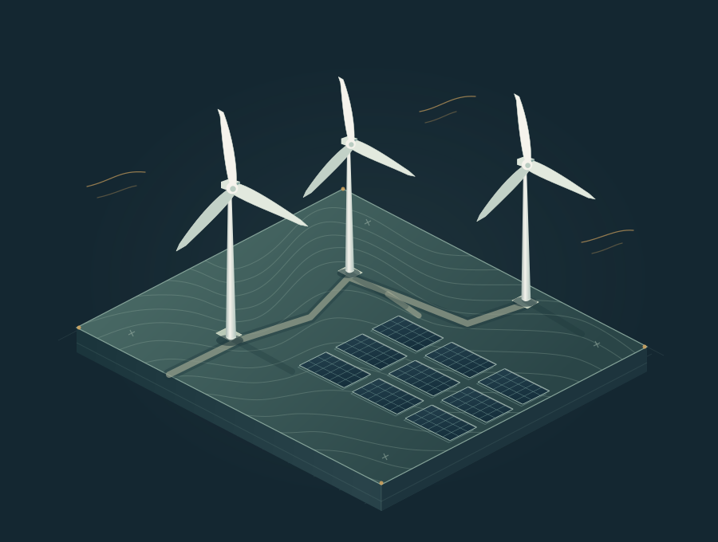

01
Вітровий ресурс
Підготовка й калібрування погодинних даних, аналіз багаторічної мінливості та оцінювання енергетичного потенціалу майданчика.
Від даних про майданчик — до обґрунтованих рішень.
Інженерна вебплатформа для оцінювання вітрових і сонячних електростанцій. Допомагає порівнювати варіанти проєкту та розуміти, що стоїть за результатами розрахунків.

Розвиваю HybridAEP як власний інженерний робочий простір: від підготовки даних і розміщення обладнання до оцінювання виробітку та звіту. У центрі — зрозумілі припущення, відтворювані розрахунки й можливість порівнювати рішення.
Основні модулі — коротко, через задачі, які вони допомагають вирішувати.
Підготовка й калібрування погодинних даних, аналіз багаторічної мінливості та оцінювання енергетичного потенціалу майданчика.
Розміщення обладнання з урахуванням меж, обмежень і особливостей території. Наочний контекст для порівняння проєктних рішень.
Оцінка взаємного впливу турбін і втрат у вітровому сліді. Порівняння моделей та візуалізація потоків для кращого розуміння результатів.
Підбір сумісних панелей та інверторів, розміщення фотоелектричних столів і порівняння варіантів електричної конфігурації.
Підготовка сценаріїв, запуск серій розрахунків через PVsyst та зіставлення виробітку й втрат між варіантами.
Погодинні профілі генерації, аналіз втрат і невизначеності, наочні інженерні звіти та експорт результатів для подальшої роботи.
Результати одного етапу стають основою для наступного — зі збереженням контексту й можливістю повернутися до вихідних припущень.
Вихідні дані, ресурс і територія.
Обладнання, розміщення та варіанти.
Генерація, взаємний вплив і втрати.
Порівняння, висновки та звіт.
Напишіть про вашу задачу — обговоримо можливості платформи, підхід до оцінювання або демонстрацію робочого процесу.
Запросити демонстрацію